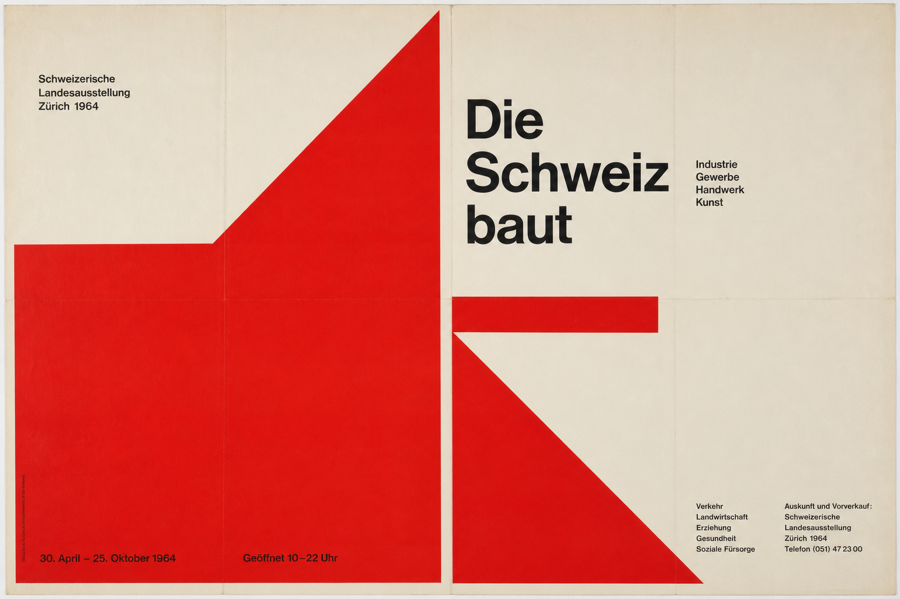
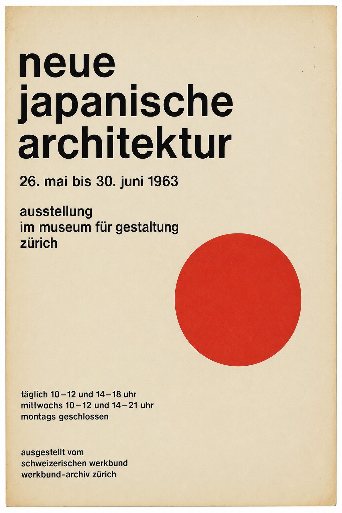

ATP-1962-014

Inventarnr. ATP-1960-088
| Titel | Ausstellung konstruktive Formen |
|---|---|
| Gestalter:in | Elisabeth Frei |
| Jahr | 1960 |
| Auftraggeber | Kunsthalle Zürich |
| Druckverfahren | Siebdruck |
| Format | 70 × 100 cm |
| Inventarnr. | ATP-1960-088 |
| Provenienz | Nachlass Frei, 1998 |
| Standort | Depot B, Planlade 14 |
Das Plakat verbindet eine strenge linksbündige Satzanlage mit einem einzigen roten Kreis, der als Orientierungspunkt und Störung zugleich funktioniert. Die typografischen Blöcke sind nicht mittig austariert, sondern auf eine vertikale Achse gesetzt, die den Blick vom Ausstellungstitel zur organisatorischen Information führt. In dieser Verschiebung wird sichtbar, wie die Schweizer Gebrauchsgrafik um 1960 visuelle Hierarchie über Mass, Achse, Abstand und kontrollierten Weissraum erzeugte.
Die Papieroberfläche weist leichte Alterungsspuren, minimale Randverfärbungen und Spuren früherer Lagerung auf. Diese Zeichen wurden in der Digitalisierung bewusst nicht retuschiert, weil sie Herstellung, Distribution und institutionelle Benutzung als Teil der Objektgeschichte lesbar machen. Für die Forschung ist gerade diese materielle Ebene entscheidend: Sie trennt das historische Objekt von der abstrakten Reproduktion im Gestaltungslehrbuch.
Bemerkenswert ist die konsequente Trennung von Informationsblock und Bildzeichen. Der Entwurf vermeidet Illustration und arbeitet stattdessen mit relationaler Spannung im Raster: Der Kreis bleibt autonom, gewinnt seine Bedeutung aber durch das präzise Verhältnis zur Satzkante. Damit dokumentiert ATP-1960-088 eine Haltung, in der Ordnung nicht als Stil erscheint, sondern als Methode, öffentliche Information lesbar und zugleich einprägsam zu machen.

ATP-1962-014

ATP-1968-120

ATP-1974-231

ATP-1957-003
@archive{ATP-1960-088,
title = {Ausstellung konstruktive Formen},
author = {Frei, Elisabeth},
year = {1960},
institution = {Archiv für Typografische Praxis}
}